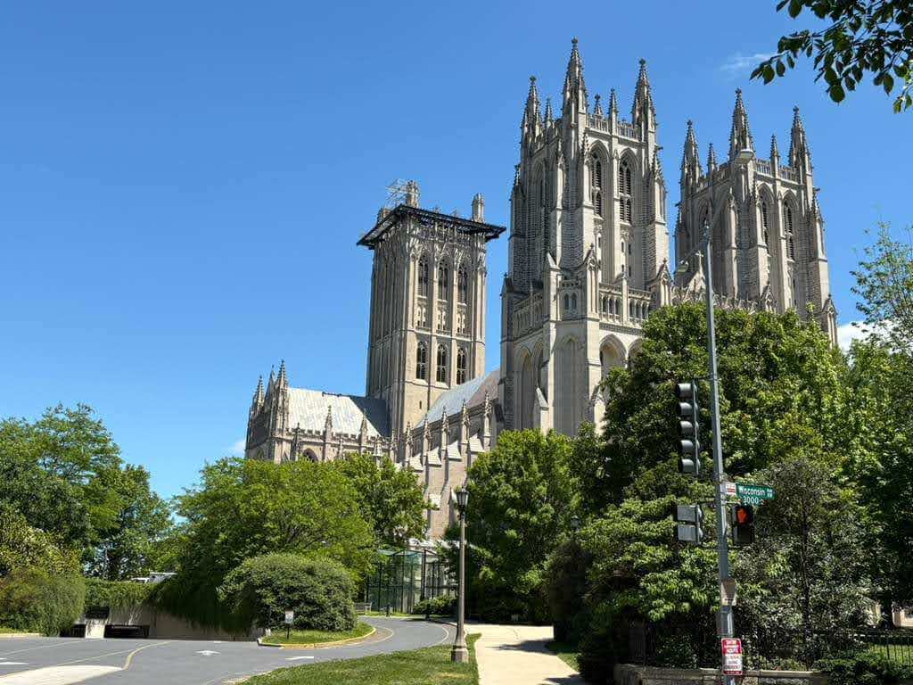

Washington National Cathedral
Washington, DC · United States
Washington National Cathedral is one of the most impressive architectural landmarks in the American capital and an important part of the city's cultural and religious heritage. Built in the Gothic Revival style, the cathedral is distinguished by its soaring towers, pointed arches, detailed stone carvings, and magnificent stained-glass windows. Construction began in 1907 and continued for more than eight decades, with the building officially completed in 1990. Inside, visitors can discover intricate architectural details, peaceful chapels, impressive vaulted ceilings, and remarkable works of art.
The cathedral is also known for its connection to important moments in American public life, having hosted presidential funerals, memorial services, and other national ceremonies. Its elevated location in northwest Washington offers a different perspective on the capital and its surroundings. Beyond its religious significance, the building stands as an outstanding example of craftsmanship, architecture, and historical continuity. These photographs capture my visit to this remarkable landmark and some of the details that make it such a distinctive place.
My Photo Gallery
Explore my photographs of Washington National Cathedral, featuring its Gothic architecture, stained-glass windows, intricate stonework, interior spaces, and distinctive atmosphere.
View All Photos ↗